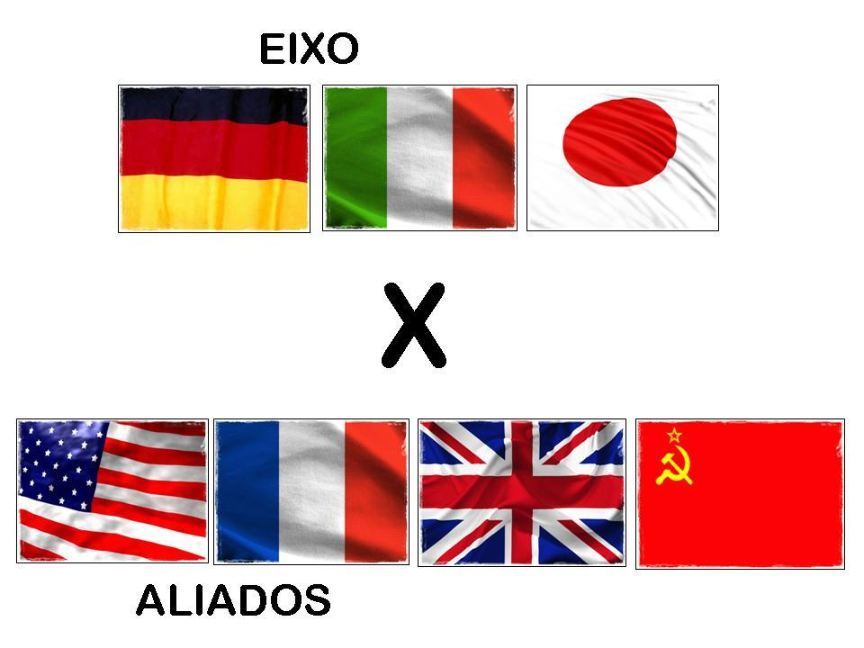

Os países

Os grupos que se enfrentaram nessa guerra foram os Aliados (Reino Unido, França, União Soviética e Estados Unidos) e o Eixo (Alemanha, Itália e Japão). Os Países do Eixo eram aqueles que reuniam as ideologias autoritárias, englobando o nazismo e o fascismo. Esse conflito ficou marcado por uma série de acontecimentos impactantes, muitos deles mudaram os rumos da história da humanidade. O Massacre de Katyn, o Holocausto, o Massacre de Babi Yar e o lançamento das bombas atômicas sobre Hiroshima e Nagasaki foram alguns dos principais. Neste artigo, falaremos mais sobre a participação países do Eixo e Aliados na Segunda Guerra Mundial, apresentando os antecedentes e consequências desse conflito.
O Local que aconteceu

A guerra iniciou-se na Europa, mas espalhou-se pela África, Ásia e Oceania e contou com o envolvimento de nações de todos os continentes, inclusive o Brasil. Pode ser organizada em três fases distintas: a fase da supremacia alemã, a fase em que as forças estavam equilibradas e a fase que marcou a derrota do Eixo.
Sobre as armas
Armas da FEB – Durante a Segunda Guerra Mundial, a FEB entrou no conflito para lutar contra as forças nazi-facistas. Os soldados brasileiros rumaram para a Europa sob olhares de desconfiança e descrédito da população civil. A tropa era despreparada, o material precário, o uniforme mesclado com peças brasileiras e peças dos EUA. Porém nosso soldado provou que do pouco pode se tirar o muito. Superando todas as expectativas, voltaram vitoriosos e deixaram sua marca na história. Neste artigo poderemos conferir as armas da FEB, geralmente utilizadas em combate aos alemães e italianos na Segunda Guerra Mundial.